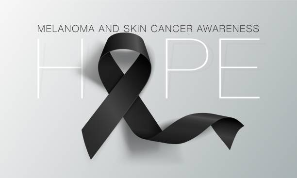

Melanoma, which means "black tumor," is the most dangerous type of skin cancer. It grows quickly and has the ability to spread to any organ. Melanoma comes from skin cells called melanocytes. These cells produce melanin, the dark pigment that gives skin its color. Most melanomas are black or brown in color, but some are pink, red, purple or skin-colored. About 30% of melanomas begin in existing moles, but the rest start in normal skin. This makes it especially important to pay attention to changes in your skin because the majority of melanomas don't start as moles. However, how many moles you have may help predict your skin’s risk for developing melanoma. It’s important to know if you’re in a high-risk group for developing melanoma skin cancer. Because of the fast growth rate of melanomas, a treatment delay sometimes may mean the difference between life and death. Knowing your risk can help you be extra vigilant in watching changes in your skin and seeking skin examinations since melanomas have a 99% cure rate if caught in the earliest stages. Early detection is important because treatment success is directly related to the depth of the cancerous growth.
Melanoma, a form of skin cancer originating in melanocytes, has a history spanning ancient civilizations like the Egyptians and Greeks, though systematic documentation began in the 19th century. This period saw the identification of melanocytes by German anatomist Paul Langerhans in 1868, laying the groundwork for understanding the disease. Throughout the 20th century, researchers made significant strides in identifying risk factors, such as sun exposure and genetic mutations, and developed classification and staging systems to predict prognosis. Treatment evolved with surgery as the primary approach for early-stage melanomas, while advancements in immunotherapy, targeted therapy, and chemotherapy improved outcomes for advanced stages. Public awareness campaigns emphasized sun safety measures and early detection through skin screenings to enhance survival rates. Genetic research in recent years has delved into molecular mechanisms underlying melanoma, leading to targeted therapies tailored to individual patients based on specific gene mutations. Emerging treatments like immune checkpoint inhibitors and targeted therapies have shown promise in treating advanced melanoma, marking significant progress in the field. However, challenges persist, including disparities in access to care and the need for effective therapies for advanced disease. Ongoing research and public health efforts are essential to further advancements in melanoma prevention and treatment.
Melanoma, which means "black tumor," is the most dangerous type of skin cancer. It grows quickly and has the ability to spread to any organ. Melanoma comes from skin cells called melanocytes. These cells produce melanin, the dark pigment that gives skin its color. Most melanomas are black or brown in color, but some are pink, red, purple or skin-colored. About 30% of melanomas begin in existing moles, but the rest start in normal skin. This makes it especially important to pay attention to changes in your skin because the majority of melanomas don't start as moles. However, how many moles you have may help predict your skin’s risk for developing melanoma. It’s important to know if you’re in a high-risk group for developing melanoma skin cancer. Because of the fast growth rate of melanomas, a treatment delay sometimes may mean the difference between life and death. Knowing your risk can help you be extra vigilant in watching changes in your skin and seeking skin examinations since melanomas have a 99% cure rate if caught in the earliest stages. Early detection is important because treatment success is directly related to the depth of the cancerous growth. ADVERTISEMENT
Melanoma, which means "black tumor," is the most dangerous type of skin cancer. It grows quickly and has the ability to spread to any organ. Melanoma comes from skin cells called melanocytes. These cells produce melanin, the dark pigment that gives skin its color. Most melanomas are black or brown in color, but some are pink, red, purple or skin-colored. About 30% of melanomas begin in existing moles, but the rest start in normal skin. This makes it especially important to pay attention to changes in your skin because the majority of melanomas don't start as moles. However, how many moles you have may help predict your skin’s risk for developing melanoma. It’s important to know if you’re in a high-risk group for developing melanoma skin cancer. Because of the fast growth rate of melanomas, a treatment delay sometimes may mean the difference between life and death. Knowing your risk can help you be extra vigilant in watching changes in your skin and seeking skin examinations since melanomas have a 99% cure rate if caught in the earliest stages. Early detection is important because treatment success is directly related to the depth of the cancerous growth. ADVERTISEMENT